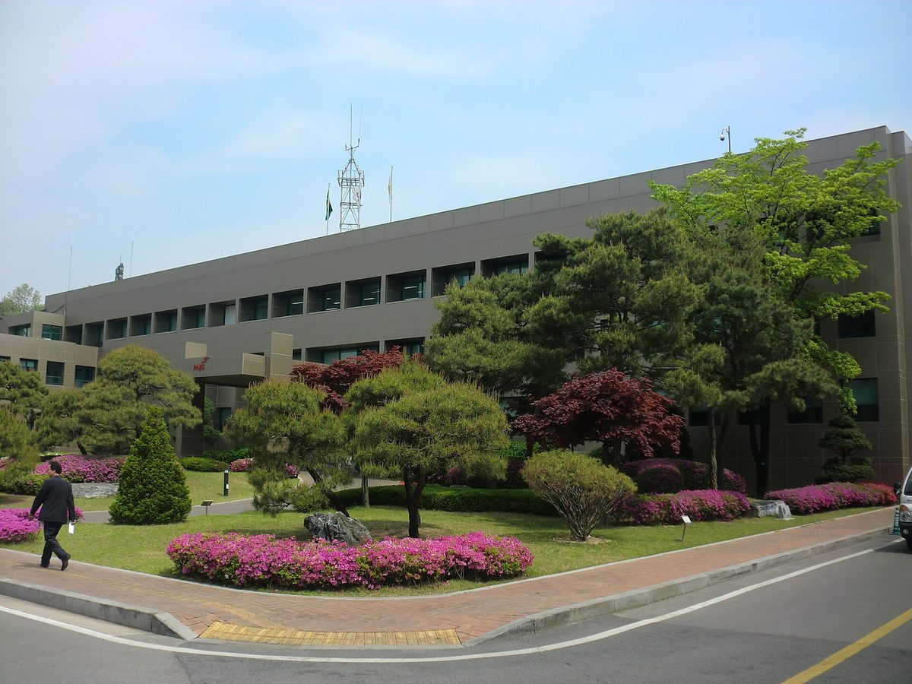

파주시, 에너지전환포럼 에너지전환상 지방자치 부문 수상…공공 재생에너지 기업 직접 PPA·아파트 알뜰 전기요금제 추진 평가

10월 28일 '2026 에너지전환의 밤'서 시상, 시는 기초지방정부 첫 수상이라고 밝혀…기업 공급 용량·전기요금 절감 규모 같은 숫자는 발표에 없어
경기 파주시가 10월 28일 서울 한국프레스센터에서 열린 사단법인 에너지전환포럼 주관 '2026 에너지전환의 밤'에서 에너지전환상 지방자치 부문을 받았다고 30일 밝혔다. 에너지전환상은 에너지 전환 정책을 이끌고 혁신적인 실천에 기여한 개인과 단체에 주는 상으로, 시는 기초지방정부가 이 상을 받은 것은 처음이며 지난해에는 경기도가 광역지방정부로 처음 받았다고 설명했다. 시가 밝힌 수상 이유는 공공 재생에너지를 관내 기업에 직접 전력구매계약(PPA)으로 공급해 재생에너지를 구하기 어려운 중소·중견기업의 RE100 이행과 수출기업의 탄소 무역장벽 대응을 도운 점, 분산에너지 특화지역 지정을 추진하면서 '아파트 알뜰 전기요금제' 도입 같은 시민 전기요금 절감책을 마련하고 있는 점이다. 시상식에서는 최병갑 파주시 부시장이 상을 받았다. 다만 시 발표에는 기업에 공급하는 재생에너지 용량과 대상 기업 수, 알뜰 요금제의 내용과 절감 규모, 특화지역 신청 시점이 나오지 않았다.
시민에너지 관점
시가 가진 공공 재생에너지를 지역 기업에 직접 파는 방식은 지역에서 만든 전기를 지역 안에서 쓰게 한다는 점에서 분산에너지 시대가 가야 할 방향과 맞닿아 있다. 그러나 이번 발표에는 숫자가 하나도 없고, 발전 설비를 누구 돈으로 세웠으며 전기를 판 수익이 어디로 가는지도 빠져 있어, 시민은 요금 할인을 기다리는 쪽에 머물러 있다. 시민 출자를 끼우면 PPA 단가가 올라 기업 지원이 약해진다는 걱정이 나올 수 있지만, 공공부지와 공공건물 지붕 발전소에 시민·협동조합 출자 몫을 두면 공공이 소유권을 놓지 않고도 수익이 지역 주민에게 배당으로 남고 기업은 같은 전기를 그대로 살 수 있어 둘은 부딪치지 않는다. 파주시는 상의 무게에 걸맞게 PPA 공급 용량과 단가, 알뜰 요금제의 기준을 공개하고, 분산에너지 특화지역 계획에 시민과 지역 협동조합이 출자해 함께 소유하는 몫을 처음부터 넣어야 한다.
출처: 경인매일 2026-10-30 이기홍 원문 보기
坡州市、エネルギー転換フォーラムのエネルギー転換賞・地方自治部門を受賞…公共再エネの企業向け直接PPA、マンション向け節約電気料金制の推進を評価
10月28日の「2026エネルギー転換の夜」で授賞、市は基礎自治体として初の受賞と説明…企業への供給容量や電気料金の削減規模などの数字は発表になし
京畿道坡州市は、10月28日にソウルの韓国プレスセンターで開かれた社団法人エネルギー転換フォーラム主催の「2026エネルギー転換の夜」で、エネルギー転換賞の地方自治部門を受賞したと30日明らかにした。エネルギー転換賞はエネルギー転換政策を先導し、革新的な実践に貢献した個人と団体に贈られる賞で、市は基礎自治体の受賞は初めてで、昨年は京畿道が広域自治体として初めて受賞したと説明した。市が挙げた受賞理由は、公共の再生可能エネルギーを市内の企業に直接電力購入契約（PPA）で供給し、再エネの調達が難しい中小・中堅企業のRE100履行や輸出企業の炭素関連の貿易障壁への対応を支援した点と、分散エネルギー特化地域の指定を進めながら「マンション節約電気料金制」の導入など市民の電気料金を下げる策を準備している点だ。授賞式ではチェ・ビョンガプ副市長が賞を受け取った。ただし市の発表には、企業に供給する再エネの容量や対象企業の数、節約料金制の内容と削減規模、特化地域の申請時期は示されていない。
市民エネルギーの視点
市が持つ公共の再生可能エネルギーを地域企業に直接売る方式は、地域でつくった電気を地域の中で使うという点で、分散エネルギー時代が向かうべき方向と重なる。しかし今回の発表には数字が一つもなく、発電設備を誰のお金で建て、電気を売った収益がどこへ行くのかも抜け落ちており、市民は料金割引を待つ側にとどまっている。市民出資を入れればPPA単価が上がり企業支援が弱まるという懸念もあり得るが、公有地や公共建物の屋根の発電所に市民・協同組合の出資分を設ければ、公共が所有権を手放さなくても収益が配当として地域住民に残り、企業は同じ電気をそのまま買えるため、両者はぶつからない。坡州市は受賞の重みにふさわしく、PPAの供給容量と単価、節約料金制の基準を公開し、分散エネルギー特化地域の計画に、市民と地域の協同組合が出資して共に所有する分を最初から盛り込むべきだ。
出典: 京仁毎日 2026-10-30 イ・ギホン 原文を読む
坡州市获能源转型论坛能源转型奖地方自治部门奖…推动公共可再生能源直供企业PPA和公寓节约电价制获肯定
10月28日"2026能源转型之夜"颁奖，市政府称这是基层地方政府首次获奖…企业供电容量和电费节省规模等数字未在公告中披露
京畿道坡州市30日表示，在10月28日于首尔韩国新闻中心举行、由社团法人能源转型论坛主办的"2026能源转型之夜"上，获得了能源转型奖地方自治部门奖。能源转型奖颁给引领能源转型政策、为创新实践作出贡献的个人和团体；市政府介绍，这是基层地方政府首次获得该奖，去年京畿道作为广域地方政府首次获奖。市政府列出的获奖理由是：通过直接购电协议（PPA）把公共可再生能源供应给本地企业，帮助难以获得可再生能源的中小及中坚企业履行RE100，并协助出口企业应对与碳相关的贸易壁垒；同时在推动分散能源特区指定的过程中，准备引入"公寓节约电价制"等降低市民电费的措施。颁奖仪式上由坡州市副市长Choi Byeong-gap代表领奖。不过，市政府的公告没有提到向企业供应的可再生能源容量和企业数量、节约电价制的具体内容和节省规模，以及申请特区的时间。
市民能源视角
市政府把手中的公共可再生能源直接卖给本地企业，让本地生产的电力在本地使用，这与分散能源时代应走的方向相符。但此次公告没有一个数字，发电设施由谁出资建设、售电收益流向哪里也都没有交代，市民仍停留在等待电费优惠的位置。有人可能担心引入市民出资会推高PPA电价、削弱对企业的支持；但若在公共用地和公共建筑屋顶电站中设置市民和合作社的出资份额，公共部门无需放弃所有权，收益就能以分红形式留给当地居民，企业也照样能买到同样的电，两者并不冲突。坡州市应与这一奖项的分量相称，公开PPA供电容量与价格以及节约电价制的标准，并在分散能源特区规划中从一开始就写入由市民和本地合作社出资、共同拥有的份额。
来源: 京仁每日 2026-10-30 Lee Ki-hong 查看原文
Paju wins the Energy Transition Forum's Energy Transition Award in the local government category for direct PPAs of public renewable power to firms and a money-saving apartment electricity plan
The award was presented at the "2026 Energy Transition Night" on October 28, and the city says it is the first basic-level local government to win; no figures such as supply capacity for firms or electricity bill savings were announced
Paju, a city in Gyeonggi Province, said on October 30 that it received the Energy Transition Award in the local government category at the "2026 Energy Transition Night," hosted by the Energy Transition Forum, a nonprofit incorporated association, at the Korea Press Center in Seoul on October 28. The award goes to individuals and organizations that lead energy transition policy and contribute to innovative practice, and the city said it is the first basic-level local government to receive it, after Gyeonggi Province became the first provincial-level winner last year. According to the city, it was recognized for supplying public renewable power to local companies through direct power purchase agreements (PPAs), helping small and mid-sized firms that struggle to source renewable electricity meet RE100 goals and exporters respond to carbon-related trade barriers, and for preparing measures to cut residents' electricity bills, such as an "apartment money-saving electricity plan," while seeking designation as a distributed energy special zone. Deputy Mayor Choi Byeong-gap accepted the award at the ceremony. The city's announcement did not give the amount of renewable power supplied to firms, the number of companies involved, the details or savings of the apartment plan, or when it will apply for the special zone.
Citizen Energy View
A city selling its public renewable power directly to local firms, so that electricity made in the area is used in the area, fits the direction the distributed energy era should take. But the announcement contains not a single figure and leaves out who paid for the generating facilities and where the revenue from selling the power goes, leaving residents waiting on the sidelines for a bill discount. Some may worry that bringing in citizen investment would push up PPA prices and weaken support for firms, but if citizens and cooperatives hold a share in power plants on public land and public rooftops, the public sector keeps ownership while profits stay with local residents as dividends and firms can still buy the same electricity, so the two do not clash. To live up to the award, Paju should disclose its PPA supply capacity and prices and the criteria for the apartment plan, and write into its distributed energy zone plan from the start a share that residents and local cooperatives invest in and own together.
Source: Kyeongin Maeil 2026-10-30 Lee Ki-hong Read the original